3-11-磁盘管理
任务背景
运维超哥突然接到公司的微信告警通知，说数据库服务器根分区磁盘使用率超过了85%、该机器主要存储博客的用户文章、用户信息等数据。
[root@yuchao-linux-242 ~]#df -h
Filesystem Size Used Avail Use% Mounted on
/dev/mapper/centos-root 17G 1.4G 16G 8% /
devtmpfs 899M 0 899M 0% /dev
tmpfs 911M 0 911M 0% /dev/shm
tmpfs 911M 9.6M 902M 2% /run
tmpfs 911M 0 911M 0% /sys/fs/cgroup
/dev/sda1 1014M 142M 873M 14% /boot
tmpfs 183M 0 183M 0% /run/user/0
[root@yuchao-linux-242 ~]#lsblk
NAME MAJ:MIN RM SIZE RO TYPE MOUNTPOINT
sda 8:0 0 20G 0 disk
├─sda1 8:1 0 1G 0 part /boot
└─sda2 8:2 0 19G 0 part
├─centos-root 253:0 0 17G 0 lvm /
└─centos-swap 253:1 0 2G 0 lvm [SWAP]
sr0 11:0 1 4.2G 0 rom
运维查看后，发现mysql的数据目录放在了/usr/local/mysql中，占用了根文件系统空间，经过研究讨论，决定把用户博客数据单独存放在另外一块磁盘里，并且实现逻辑卷管理。
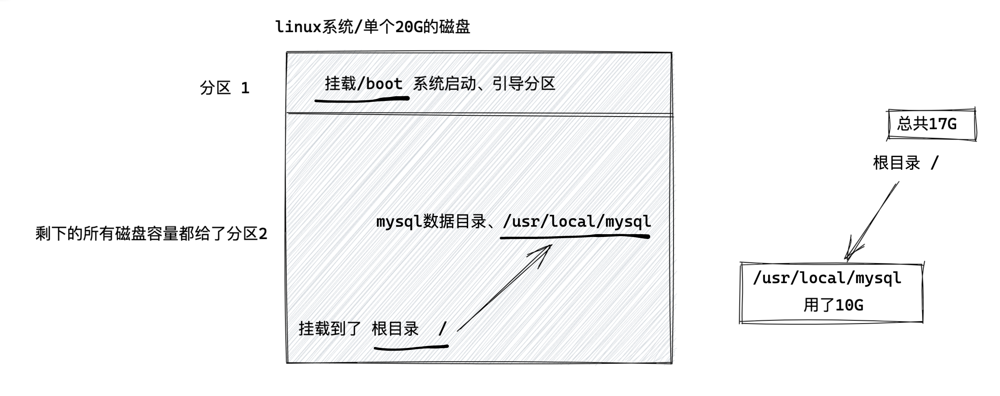
新加磁盘图解
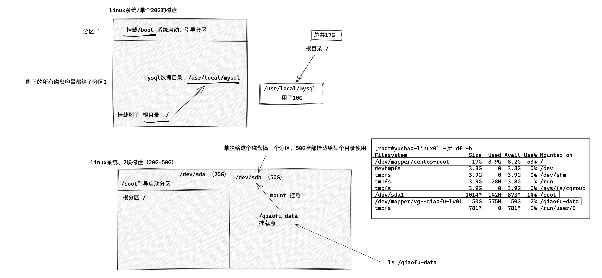
任务拆解
1.保证数据库数据完整的情况下，将用户数据， 迁移到另外一块新硬盘中。
2.考虑到数据会不断增长，用户产生大量博客，新磁盘采用lvm逻辑卷管理，方便日后动态扩容。
知识储备
1.需要一块新硬盘（虚拟机可添加）
2.新硬盘需要做lvm管理
3.数据库迁移（夜间停机维护 凌晨2点）
- 停止数据库监控
- 停止前端（关闭前端数据入口，比如停用博客发表功能）
- 停止后端（可选）
- 停止mysql数据库（防止数据还在写入、或者锁表）
- 备份数据库（全备）
- 迁移数据到新硬盘（rsync），新硬盘已经做好了lvm，且挂载好了。
- 启动数据库
- 启动前端入口
- 测试数据读写
- 博客功能重新恢复上线。
- 打开数据库监控
新知识储备
- 添加新磁盘、以及后续磁盘配置命令。
- lvm逻辑卷管理。
实战目标
- 使用fdisk命令管理磁盘分区
- 格式化分区文件系统
- 磁盘分区挂载（手动、开机启动、自动挂载）
- 理解lvm原理
- 物理卷、卷组、逻辑卷
- 创建物理卷
- 创建卷组
- 创建逻辑卷
- 熟练掌握lvm的命令。
理论知识储备
计算机硬件与存储
计算机

硬盘
机械硬盘，转速+缓存是磁盘高性能的指标
服务器级别硬盘
硬盘是什么
硬盘就是计算机中用来存储、持久化存储数据的一个设备。
市面主流的硬盘有两类、机械硬盘、固态硬盘。
区别于内存、硬盘中的数据，关机后，一直存在。
硬盘也被称为磁盘，因为硬盘存储数据和电磁有关，机械硬盘里有很多张磁盘。
一张图告诉你磁盘分区要学什么
自己准备一个U盘、或者移动硬盘，试试对硬盘进行格式化。
注意别是你机器上的磁盘。。
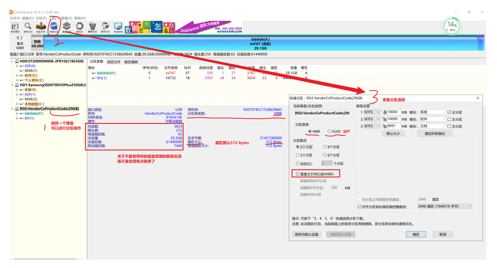
磁盘内部体系知识
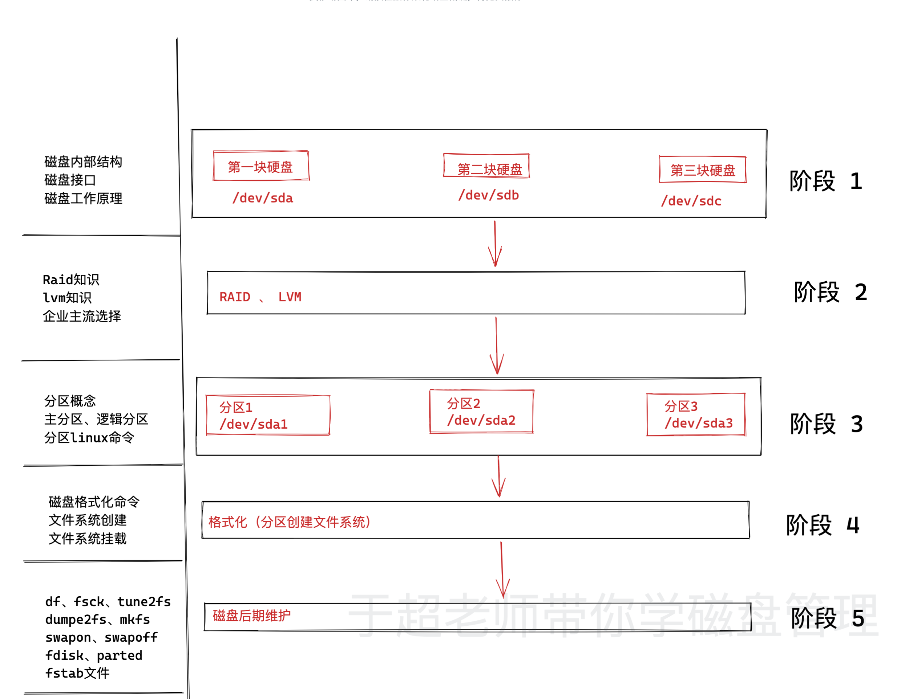
磁盘写入数据流程
磁盘要放入计算机且被Linux系统识别，到可以使用磁盘存储数据，过程如下：
1.磁盘要存数据，相当于人盖房子
2.磁盘要分区后才能够存储数据，相当于房子改好了，需要隔断分出卧室，厨房，卫生间等区域
3.磁盘分区完成后，还得格式化后才能使用，且创建文件系统后才可以存储数据，相当于家里得装修后才能开始住人，不同的文件系统相当于不同的装修风格
4.磁盘分区，格式化，创建文件系统后，还得进行挂载到不同的文件夹，才能存放数据，相当于房子还得安装门、窗，才能和外界通信，进出
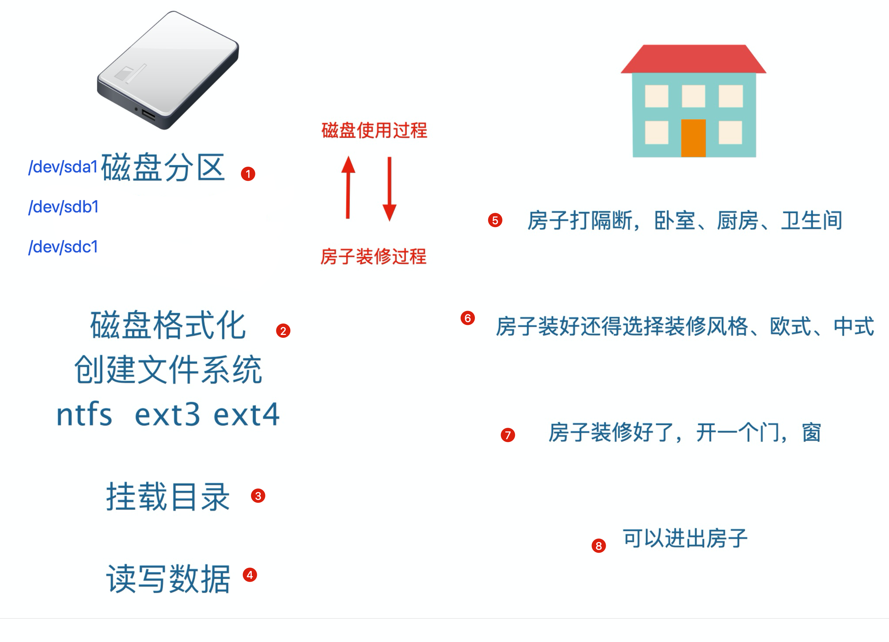
机械硬盘原理
首先简单认识一下硬盘的物理结构，硬盘内部的物理结构很复杂，只能从大的颗粒度去看内部的结构
硬盘长什么样
磁盘内部
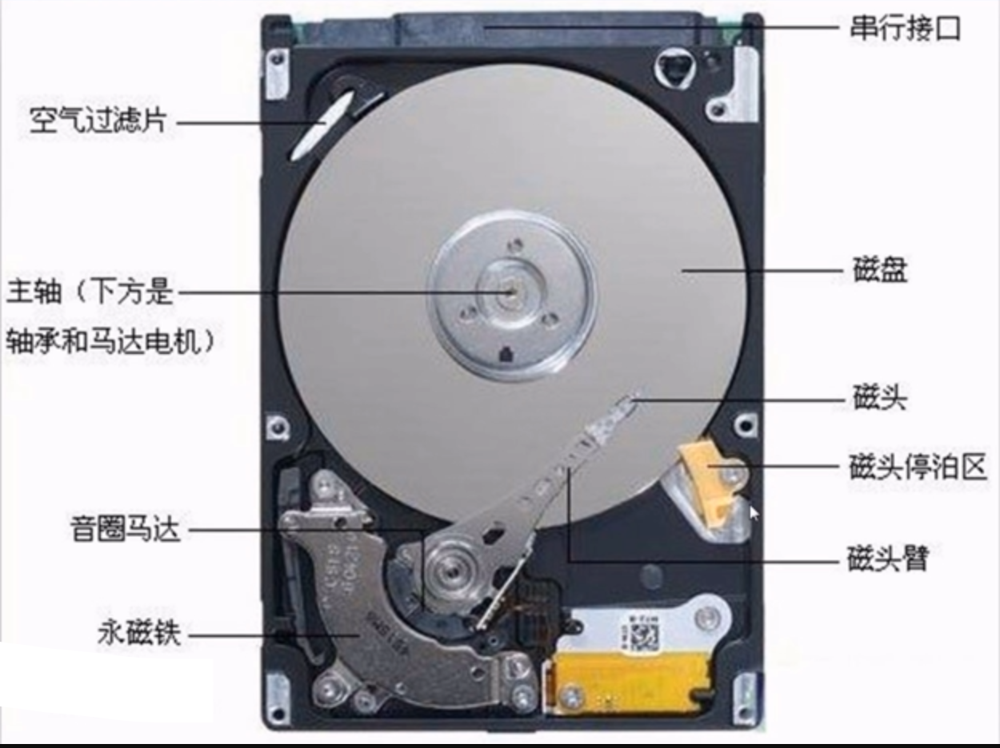
基本的结构就是这样子的，至于硬盘是如何进行读写的，必须要知道磁盘盘片是如何划分的？否则你只知道磁头在盘片上动来动去。
盘片上涉及的基本概念
整个硬盘上一般有很多的盘片组成
每个盘片如同切西瓜一样被“切”成一块一块的扇面
同时沿着半径的方向被划分成了很多同心圆，就是传说中的磁道
磁道被扇面切成很多的扇形区域叫做扇区（扇区是从磁盘读出和写入信息的最小单位，通常大小为512字节），不同盘片上的同半径磁道组成了柱面
这些都是磁盘物理上的概念，知道便可。
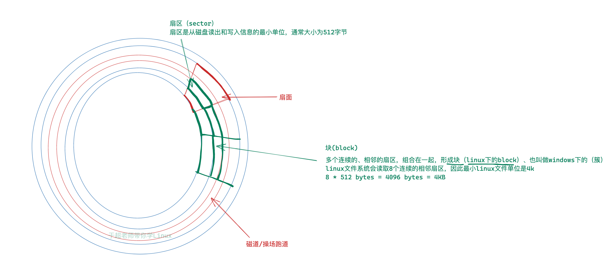
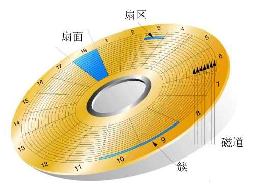
机械硬盘由坚硬金属材料制成的涂以磁性介质的盘片，盘片两面称为盘面或扇面，都可以记录信息，由磁头对盘面进行操作，一般用磁头号区分。
结构特性决定了机械硬盘如果受到剧烈冲击，磁头与盘面可能产生的哪怕是轻微撞击都有可能报废。
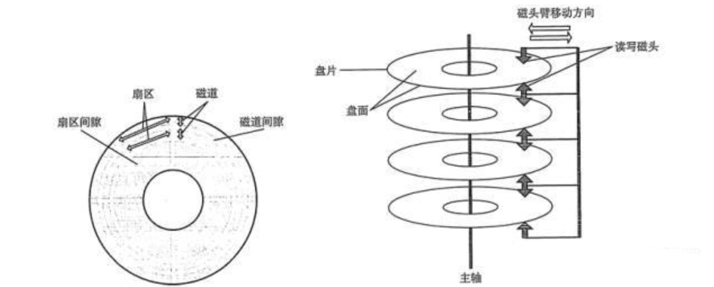
磁头不动，硬盘旋转，磁头就会在磁盘表面画出一个圆形轨迹且磁化，数据就保存在磁化区域中，称之为磁道。

每个磁道分段，一个弧就是一个扇区。
一个机械硬盘，有很多张磁盘片
一个硬盘表面可以有多个扇面，每个扇面磁道数相同，具有相同周长的磁道形成的圆柱称之为柱面，柱面数与磁道数相等。
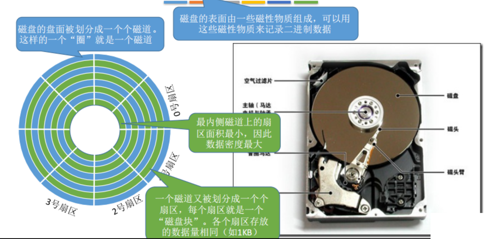
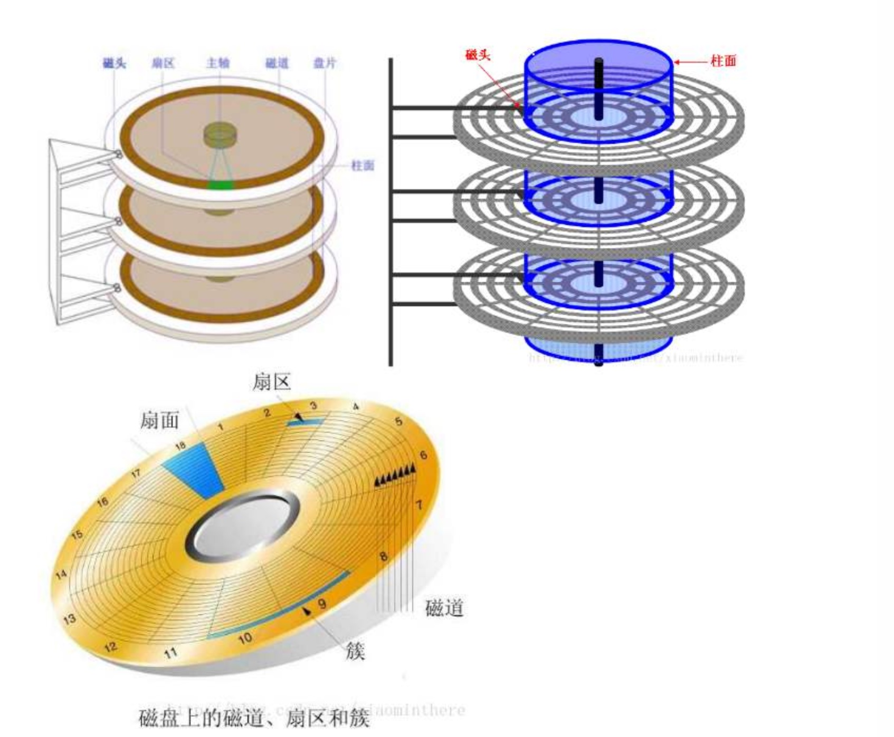
磁盘名词（记忆）
l 磁头（head）数：每个盘片一般有上下两面，分别对应1个磁头，共2个磁头；
l 磁道（track）数：磁道是从盘片外圈往内圈编号0磁道，1磁道...，靠近主轴的同心圆用于停靠磁头，不存储数据；
l 柱面（cylinder）数：同磁道数量；
l 扇区（sector）数：每个磁道都别切分成很多扇形区域，每道的扇区数量相同，扇区大小是0.5KB是512字节，文件存储在硬盘中，最小存储单位就是扇区。
l 磁头读取扇区数据，是读取
连续的多个扇区，称之为block（块）l 圆盘（platter）数：就是盘片的数量。
提问磁盘名词
磁盘"块 block"是什么
操作系统与磁盘之间交流的最小单位就是磁盘块，它是一个虚拟的概念。
是对于操作系统（软件）来说有意义的概念，因此操作系统读写磁盘的时候，是以block为单位。
由于扇区的数量比较小，数目众多在寻址时比较困难，所以操作系统就将相邻的扇区组合在一起，形成一个块，再对块进行整体的操作。
操作系统忽略对底层物理存储结构的设计，通过虚拟出来磁盘块的概念，在系统中认为块是最小的单位。
图解
A：Track 磁盘磁道（粉红色部分）
B：Geometrical sector 几何学中的扇形（紫色部分）
C：Track sector 磁盘扇区（玫红色部分）
D：Cluster 块/簇（绿色部分），linux是以"块"为单位，读取磁盘上的数据。
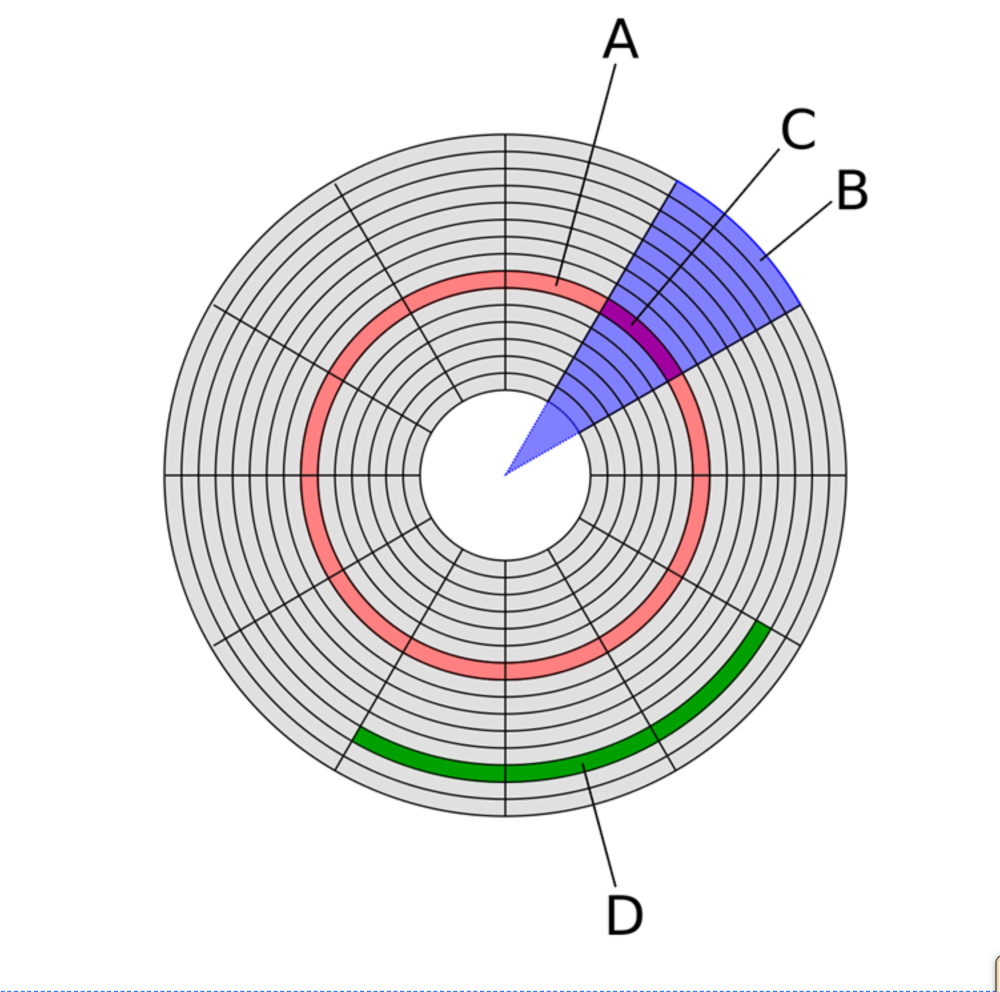
为什么操作系统要虚拟出"块"
磁盘最小单位是? 看上图，哪个区域最小，扇区。
为什么操作系统不用扇区作为IO（输入，输出）单位?而用"块"呢？
读取方便：由于扇区的Size比较小，数目众多时寻址时比较困难，所以操作系统就将相邻的扇区组合在一起，形成一个块，再对块进行整体的操作。
分离对底层的依赖：操作系统忽略对底层物理存储结构的设计。
- 通过虚拟出来磁盘块的概念，在操作系统中认为块是最小的单位。
于超老师教你简单理解，扇区、块，他俩的关系。
你小时候，购物用的硬币，最小币值是角，甚至是一分、两分钱，但是如今角、分，很难见到了，随着经济发展，生活物价水平提高，如果你还用分、角的话，非常不方便。
你想想你用一堆角、分、去买土豆，卖菜大姨，揍不揍你吧。
所以我们限制基本都是元、替代了角、分。
因此！
对计算机而言，扇区单位太小，因此用块来作为磁盘数据的单位，并且记好
- 扇区是磁盘底层使用的单位
- 块是文件系统用的单位，和操作系统有关
linux系统上的"块"（重点）
块、是文件系统层面的概念，文件系统以"块"单位去读写磁盘的数据，在linux中，"块"的默认大小是4KB。
扇区(sector)是磁盘最小的物理存储单元，单位是512字节。
操作系统无法对数目众多的扇区进行寻址，因此操作系统将相邻的扇区组合在一起，形成了块（8个扇区，4k大小）。
在Linux文件系统中多个连续的扇区称之为block、块，也是在系统中被认为是最小的存储单位 du -h /tmp/*
在windows文件系统中多个连续的扇区称作簇。
操作系统规定，一个block只能存放一个文件的内容，因此文件占用空间，只能是block的整数倍，即使文件大小，小于一个block，也就是小于4k，同样占用一个block的大小。
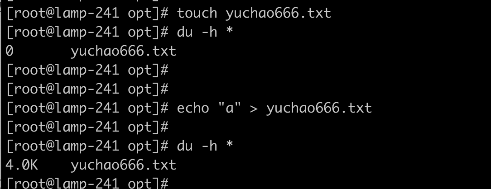
磁盘原理总结
- 磁盘盘片上，需要记住的内容
- 磁道
- 扇面
- 扇区，磁盘最小物理存储单元，512bytes
- 块，块等于8个扇区（512bytes * 8 = 4096 bytes = 4kb ）
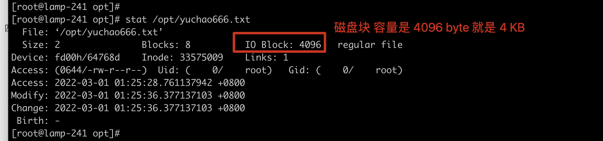
计算机容量单位
- 一个英文字母（英文逗号），占1个字节
- 一个汉字（中文逗号）、3个字节(主流的utf-8编码)
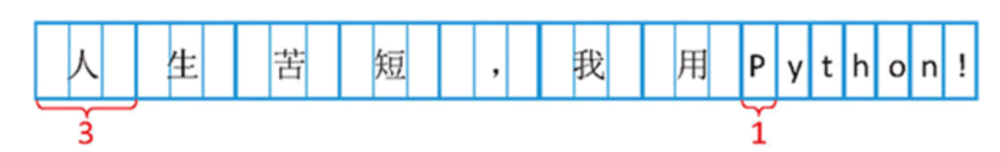
- 计算机本身是只认识二进制（0和1，逢2进1），二进制的容量单位是bit（比特），但是比特太小了，就和
分、角的概念一样，因此计算机通常使用byte作为容量单位。
1 Byte = 8 bit
随着计算机存储的发展，Byte也太小了，又出现了KB、MB、GB、TB
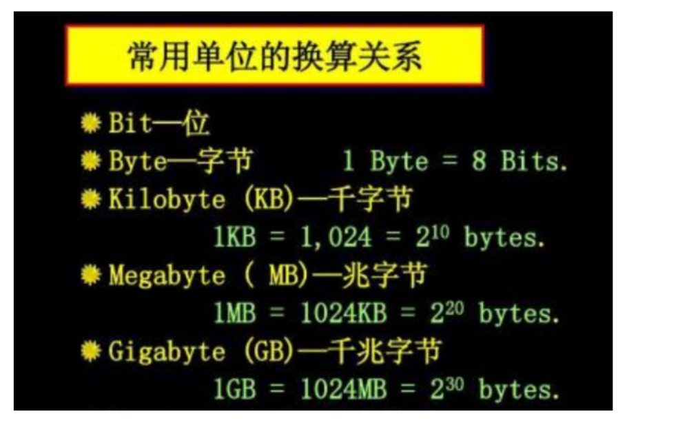
磁盘分区
硬盘分区是就使用分区编辑器（partition editor）将一个硬盘上划分几个独立的逻辑部分，盘片一旦划分成数个分区，不同类的目录与文件可以存储进不同的分区。
越多分区，也就有更多不同的地方，可以将文件的性质区分得更细，按照更为细分的性质，存储在不同的地方以管理文件；但太多分区就成了麻烦。
硬盘分区就像给一间空荡的房子划分出卧室，厨房，客厅等相互隔离的空间一样。主要是为了方面用户的使用。
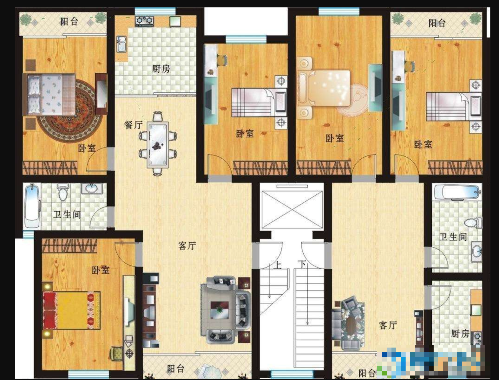
另一方面，通过合理的硬盘分区，有效保护系统盘空间，确实能够提高系统运行速度，再者，硬盘分区也可以有效地对数据进行保护。
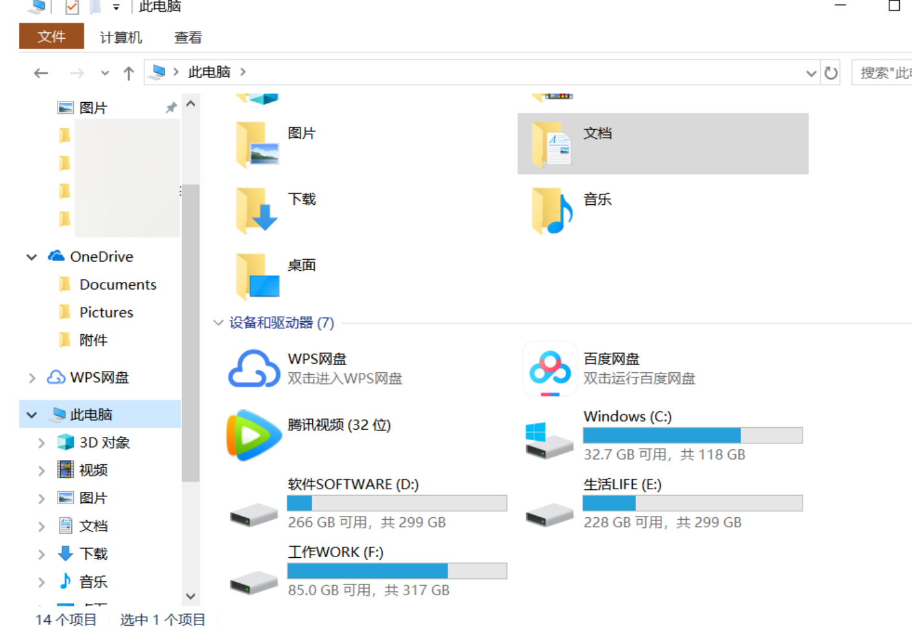
你当然可以不分区，只不过，当你面对越来越多的子目录，或者是越来越慢的Windows，不得不费功夫去管理你的文件，或者重装Windows的时候，恐怕会悔不当初。
关于MBR分区
由于硬盘的容量区别很大，甚至超过了TB的容量单位，关于磁盘分区又有了两种方式
- 小于2TB的硬盘，使用mbr分区
- 超过2TB的硬盘，使用GPT分区
MBR是什么
简单说，mbr是磁盘里第一个扇区，作用是告诉操作系统怎么加载磁盘顺序，如何开机的！
MBR（master boot record）的英文缩写，简称主引导记录，还可以叫做主引导扇区。
优点就是兼容性比较好，缺点就是不支持管理大硬盘结构。
MBR的作用是什么
主引导扇区位于整个硬盘的0磁头0柱面1扇区，包括硬盘主引导记录MBR（Master Boot Record）和分区表DPT（Disk Partition Table）。
其中主引导记录的作用就是检查分区表是否正确以及确定哪个分区为引导分区，也就是操作系统引导扇区调入内存加以执行。
mbr检查磁盘分区表是否正确，分了几个区，以及哪一个是安装了操作系统的分区，比如C盘，然后加载系统。
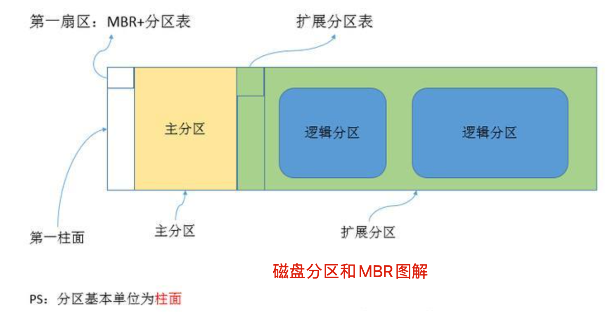
MBR分区表（DPT：disk partition table）
在MBR磁盘的第一个扇区内保存着系统启动代码和硬盘分区表。
启动代码的作用是指引计算机从活动分区引导启动操作系统（BIOS下启动操作系统的方式）；
分区表的作用是记录硬盘的分区信息。
说白了就是记录了启动硬盘、加载分区的一个记录表，如
分区表记录了
1.系统装在了c盘(第一分区)，里面也包括了启动系统的核心程序
2.加载D盘、E盘、F盘等（第N分区）
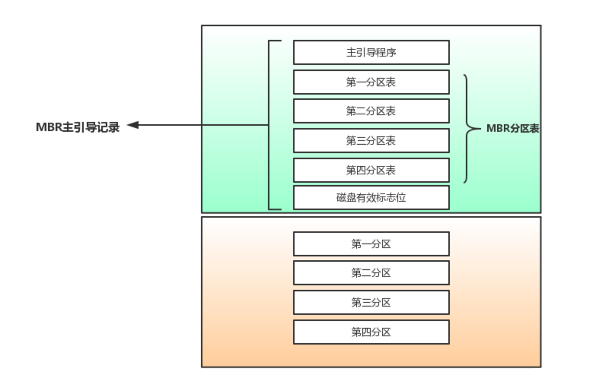
MBR结构
在总共512字节的MBR扇区中，由四部分组成：
引导程序
引导程序在0号扇区的开始位置，共占用440字节。
Windows磁盘签名
Windows磁盘签名占用引导程序后的4个字节，是windows系统对硬盘初始化时写入的一个硬盘标签。
分区表
分区表占用64字节，是MBR中非常重要的一个结构。
结束标志
扇区最后两个字节“55AA”是MBR的结束标志，剩下的都是其他分区(c、d、e、f盘)的扇区了。
boot loader
引导操作系统的主程序
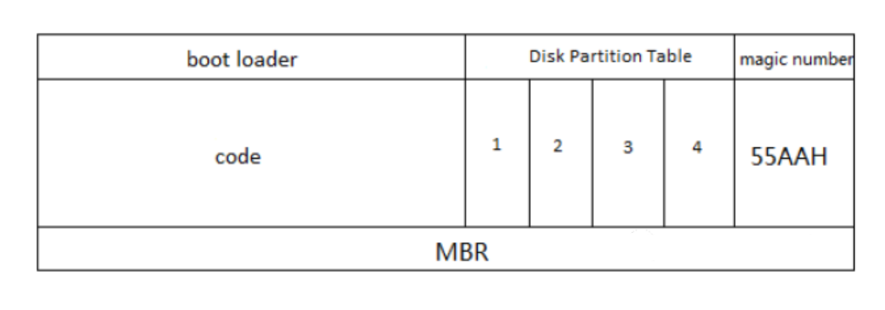
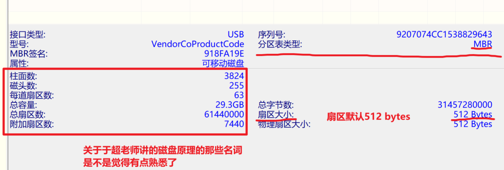
更多关于Mbr的原理，https://baike.baidu.com/item/%E4%B8%BB%E5%BC%95%E5%AF%BC%E6%89%87%E5%8C%BA/7612621
关于mbr、gpt更多硬盘原理，https://www.eassos.cn/jiao-cheng/ying-pan/mbr-vs-gpt.php
关于GPT（GUID）分区
GPT分区：全称为Globally Unique Identifier Partition Table，也叫做GUID分区表，由于MBR限制在2TB容量，GPT诞生了，优点如下
- GPT分区的硬盘容量几乎无限制
- 分区个数无限制
- 自带磁盘数据保险机制
GPT和MBR两者的区别（了解）
1、MBR分区表最多只能识别2TB左右的空间，大于2TB的容量将无法识别从而导致硬盘空间浪费；GPT分区表则能够识别2TB以上的硬盘空间。
2、MBR分区表最多只能支持4个主分区或三个主分区+1个扩展分区(逻辑分区不限制)；GPT分区表在Windows系统下可以支持128个主分区。
3、在MBR中，分区表的大小是固定的；在GPT分区表头中可自定义分区数量的最大值，也就是说GPT分区表的大小不是固定的。
何选择？
建议一：新买的电脑是传统的BIOS主板，那建议继续使用MBR硬盘模式；若是UEFI主板的话，则继续使用GPT。
建议二：如果需要重装系统，在重装前了解清楚所安装的系统版本是否支持MBR或者UEFI，这就是所谓的“兼容性”。
但是，不管是新旧系统版本，或是32/64位系统，它们都能同时兼容MBR。相反，不是所有的windows版本都兼容GPT！一定要注意了！